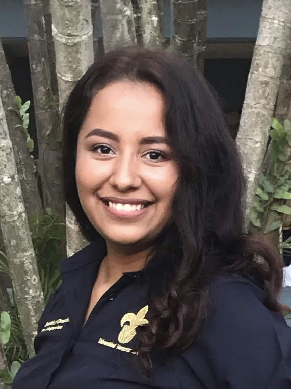

gabrieljimenezmiriam@gmail.com
921-155-1935
Acerca de mí
Me caracteriza la responsabilidad y organización, gran capacidad de trabajo en equipo, comunicación
efectiva en idioma Inglés así como la resolución de problemas de forma eficaz.
Experiencia
Hispanic Teleservices de Guadalajara, S.A. de C.V.
Bilingual Customer Service Representative
Septiembre 2022 - Presente
- Atención al cliente telefónica personalizada en llamadas outbound e inbound
- Gestión y procesamiento de los nuevos usuarios en la compañía, proporcionando la información de planes
de seguro médico
- Manejo de información privada y confidencial conocido como HIPAA compliance
Aldersgate Camp and Retreat Center
Senior Counselor
Mayo 2022 - Agosto 2022
- Coordinación de actividades y supervisión de grupos pequeños
- Programación de horarios semanales con actividades para grupos del campamento
- Identificación y respuesta a las cuestiones de comportamiento de los campistas, e informar a los líderes
de los campamentos.
Contribuir a evaluaciones verbales y escritas
Formación Academica
Lic. Gestión y Dirección de Negocios
Universidad Veracruzana
2017 - 2021
Habilidades
- HTML
- CSS
- Microsoft Office